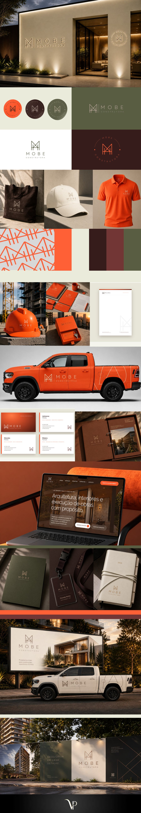

Case 02 · Construtora

Projeto autoral e obra bem executada, numa marca só.
Construtora de Porto Alegre fundada em 2017. A nova marca une os dois lados do negócio, a arquitetura e a execução, com a assinatura Espaços com propósito.
Apresentação da marca em stories